綠色 綠色科技的生產者
懷著我們只有一個地球的綠色理念，南亞科技堅持要留給未來每個世代最美好的生活環境。我們積極管理所有營運過程中對環境產生之衝擊，針對能源、資源、排放和廢棄物，採用高於法規的標準來避免或降低衝擊風險，並研發先進及高效率產品，協助消費者於產品使用期間，降低能源耗用與減少碳排放，並制訂目標檢視永續績效執行成果，善盡綠色生產之責任與保護自然環境。有鑑於氣候變遷已成為全球性顯著風險之一，我們遵循氣候變遷相關財務架構揭露指引導入風險鑑別、評估與管理流程，以提升公司在氣候變遷危機下之營運韌性。
-
Scope 1 & 2 減量12.9%
Scope 3 減量19.4% 優於SBT目標 - 製程氣體全氟化物（PFCs）排放削減率 93 %
- 2017年至2024年完成節能措施累積節能總量 74,078 MWh
重大議題策略與績效
自然與氣候管理
南亞科技正視自身營運 (生產基地：南林科學園區)與價值鏈對自然與氣候的依賴與風險衝擊影響範圍，2023年我們成為TNFD早期採用者 (Early Adopters)，並依循自然相關財務揭露 (Task Force on Nature-related Financial Disclosures, TNFD)與氣候變遷相關財務架構揭露指引 (Task Force on Climate-related Financial Disclosures Recommendation, TCFD)，公告生物多樣性政策，建立完善的LEAP作業機制評估自身營運據點、上游供應鏈和下游客戶的自然和氣候相關依賴和風險，擬定因應其策略與行動，設定管理目標與指標，期許降低風險的衝擊。
南亞科技TNCFD架構
- 治理
- 策略
- 風險管理
- 指標與目標
-
治理
管理策略與行動
- 董事會治理層級，將自然與氣候列為董事會議題，並設有永續發展委員會之功能型委員會針對自然與氣候推動相關作法與管理
- 經營管理階層定期參與永續發展季會與風險管理季會，檢視公司推動成效與決議工作事項，由總經理室轄下永續發展暨風險管理組專責單位進行跨部門橫向整合管理
- 提升董事會、管理階層之氣候治理能力與全體員工之氣候變遷素養
2024年執行狀況- 2024年共召開6次董事會與2次永續發展委員會
- 每年針對自然與氣候相關重大風險鑑別結果由風險管理推動中心進行風險評估，2024年針對164項風險依風險等級採取因應措施並進行管考
- 2024年董事進修時數為96小時，課程包含有ESG永續治理、經濟、公司治理、永續金融、綠色金融、氣候變遷、自然相關財務揭露、AI相關、法令規範等多元課程
-
策略
管理策略與行動韌性調適：
- 營運據點生物敏感度分析
- 鑑別營運對自然與氣候之依賴及衝擊影響
- 盤點價值鏈自然與氣候管理
- 以低碳產品研發、綠色科技生產、永續供應鏈管理以及自然和諧開發四大方向有效降低對自然與氣候環境的衝擊
- 透過不同的平台收集彙整外部利害關係人的意見
- 辦理自然與氣候相關活動，將南亞科技永續理念傳遞給相關利害關係人
2024年執行狀況韌性調適：- 透過地理資訊系統及政府公開資料，分析南亞科技營運位置 (兩公里內)是否觸及生物多樣性敏感區域
- 蒐集利害關係人關注自然與氣候議題，以跨部門工作坊模式討論短、中、長期風險與機會，共鑑別出14項高度依賴因子與9項重大衝擊因子
- 藉由自然與氣候風險情境模擬對公司的營運、策略和財務規劃之衝擊，(1)轉型情境：國家減碳路徑NDC，IEA WEO淨零路徑(APS、NZE)；(2) 實體情境：AR5 RCP2.6、4.5、6.0與8.5
- 發放關鍵供應商共計50份問卷，分析結果具高風險程度與高暴露的依賴為2項因子，5項因子為供應商高度關注的議題
- 考量不同氣候轉型與物理情境下之風險與機會，與南亞科技營運特性，已訂定包含研發綠色產品、落實綠色生產、強化調適能力、攜手永續夥伴等策略
- 每年定期進行生態監測與生態復育，力求營運擴增中，能夠盡量避免對當地關鍵區域的破壞，未來持續採用生態復育進行環境補償
- 積極參與產業公協會，共同主持自然與氣候倡議，分享南亞科技的實踐經驗
- 與在地團體合作，舉辦社區環境教育與環境公益及文化保存活動，並從2023年開始，積極研議可能的環境補償做法 (如保育棲息地)，共同營造美好的社區的自然環境
-
風險管理
管理策略與行動
- 依營運風險管理作業程序，評估自然與氣候變遷各種情境之風險與機會，並設定相關因應方案，納入企業風險管理 (ERM)，並定期由高階管理階層確認
- 每年進行溫室氣體範疇一/二/三之盤查及查證，確認溫室氣體產生源並進行重點管理
- 推動產品生命週期盤查與熱點改善
2024年執行狀況- 氣候變遷鑑別重大風險為國家電力結構改變、客戶對於低碳產品之需求、及實踐 SBT 承諾的衝擊等轉型風險，估算三項風險將造成公司年度營收3-4%之財務衝擊
- 因應2026年碳費徵收，以碳費費率300元/公噸CO2e計價，預估繳納1.45億元，若以碳費費率100元/公噸CO2e計價，預估繳納約4千萬元，預估佔年營業收入比例0.5%~1.6%
- 鑑別出之主要機會為產品技術與新市場開發：淨零趨勢下，潔淨能源科技的智慧化將帶動DRAM需求之成長，依IEA情境分析，潔淨科技市場於2030年將成長為3倍，公司將把握機會，持續投入創新研發資源 (2024年達總營收之22.5%)
- 水資源風險依據WRI Aqueduct Tool分析短期水壓力評估結果為中低風險 (10-20%)；長期2050年亦為中低風險 (10-20%)，即非水壓力地區；依據台灣氣候變遷推估資訊與調適知識平台計畫 (TCCIP)的氣候變遷水資源危害圖資訊，在RCP 8.5世紀中 (Y2036~Y2065)情境下無用水不足風險；2023年耗水費開徵，在南亞科技近年努力推動節水與水回收措施，達政府最低徵收費率，每年水費增加幅度僅約3%，對營運成本影響低
- 2024年之溫室氣體排放量，於2025年5月全部完成盤查驗證。已完成100%產品環境足跡之盤查，並將 2024年盤查結果之碳足跡三大熱點，進行管理方案改善
-
指標與目標
管理策略與行動減緩目標：
- 每年溫室氣體範疇一/二/三之盤查及查證
- 制訂溫室氣體管理與能資源循環再利用目標
- SBT減量目標：2030年溫室氣體範疇1+ 2排放量較2020年減少25 % ，2030年溫室氣體範疇3產品單位排放較2020年減量27%
- 強化公司抗旱能力，提升水資源回收率
- 推動綠色工廠與智慧工廠認證
- 參與國際CDP組織氣候變遷專案、水安全專案，強化與利害相關人之氣候變遷議題溝通
2024年執行狀況減緩指標：- 完成2024年溫室氣體範疇一/二/三之盤查及查證
- 2024年累計完成20項次原料使用量改善提案
- 2024年投入3,617萬元，完成27件節能管理方案, 節能效益為5,513 MWh之電力
- 2024年再生能源使用3,523萬度，佔總用電量比例4.4%
- 2024年SBT科學減量目標執行情形：範疇1+2減量12.9%；範疇3減量 19.4%
- 2024年回收再利用水量總計5,590千立方公尺
- 2024年AWS (國際水資源管理標準)白金認證
- 2024年CDP 氣候變遷A List與水安全 A-
溫室氣體盤查
南亞科技依循國際準則(ISO 14064-1、GHG Protocol)及臺灣行政院環境部溫室氣體相關規範，以100％營運控制權的方式設定組織邊界進行溫室氣體盤查作業，並且委由第三方認證機構完成範疇一、範疇二及範疇三查證。
2024年溫室氣體排放類別佔比
- 範疇一 + 範疇二
- 範疇三
-
範疇一 + 範疇二
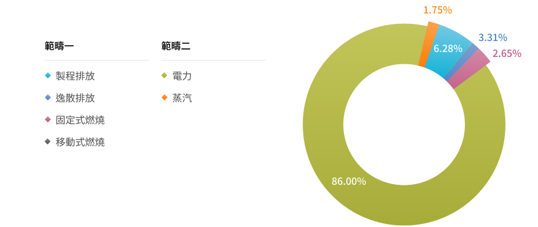
-
範疇三
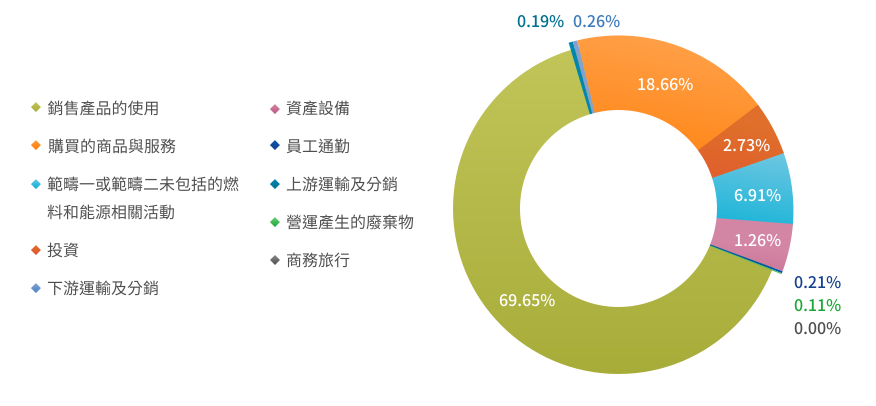
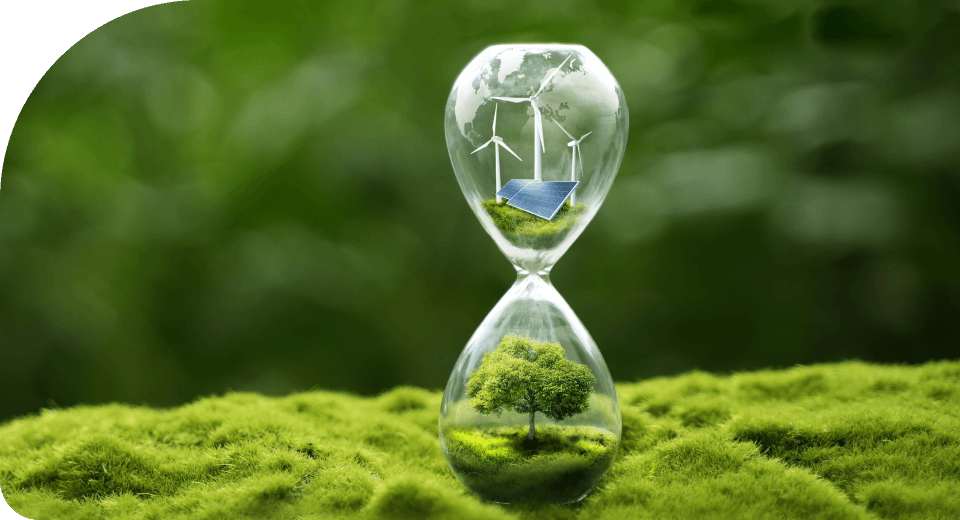
溫室氣體減量
南亞科技積極推動自願減量，於建廠規劃時購置高削減率Local Scrubber；目前薄膜區與蝕刻區所使用之PFC Local Scrubber，為直接燃燒式 (Burn Type)，藉由燃燒所產生之高溫破壞PFCs。為減少PFCs逸散至空氣中，制訂Local Scrubber處理PFCs之削減率驗收標準，針對CF4氣體處理效率應達90%以上，處理C3F8、C4F6、C4F8、CHF3、CH2F2及SF6之削減率需達到95%以上，NF3之削減率則應達99%以上，並於Local Scrubber設置完成後，以FTIR檢測各種PFCs氣體削減率，以符合未來減量趨勢。
-
2024年較2020年 (基準年)
範疇一 + 範疇二 減量 12.9 % -
提升生產技術
使產品製造過程減少溫室氣體排放 低碳製造 -
2030年溫室氣體範疇1+2排放量較基準年減少25%，
2030年溫室氣體範疇3產品單位排放較基準減量27% SBT目標
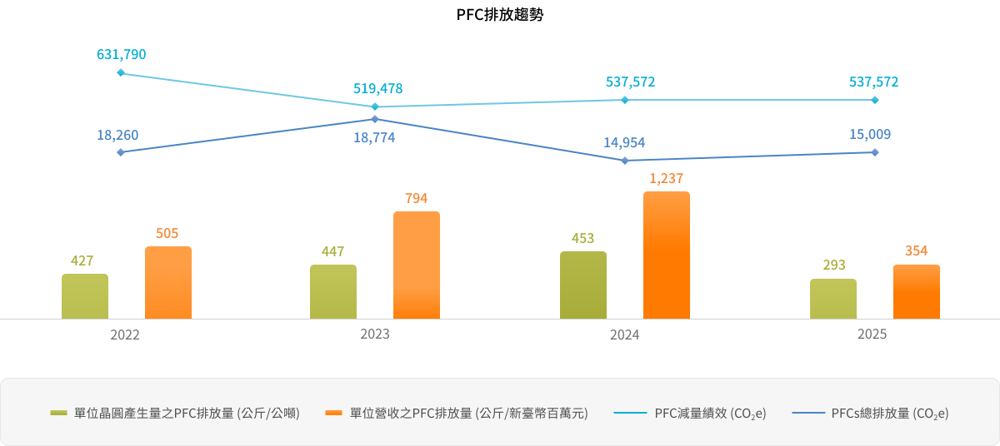
能源管理
能源結構
化石能源的使用年限與環境衝擊已是最重要的議題，有效管理已是刻不容緩。南亞科技使用的能源主要為外購電力、蒸汽及天然氣，無使用公司內部能源；外部其他間接能耗造成溫室氣體排放則包括廠內使用原物料運輸、原物料供應商生產、廢棄物運輸/處理、員工差旅、員工通勤等。針對能源耗用管理，南亞科技已制定“能源審查管理程序”規範書，以有效管理本公司能源使用及消耗，藉由本程序書來評估各種能源使用及消耗的狀況，並找出其重大能源使用項目，加以管制並設立改善目標以達到節能的效益。
- 能源結構
- 2021至2024年用電量
-
能源結構
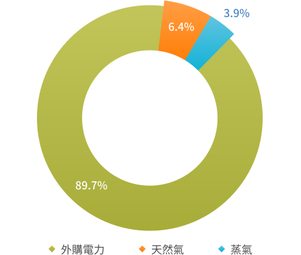
-
2021至2024年用電量
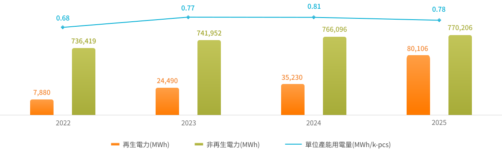
再生能源使用與規劃
針對再生能源使用，南亞科技主要分以下三階段進行規劃與落實。
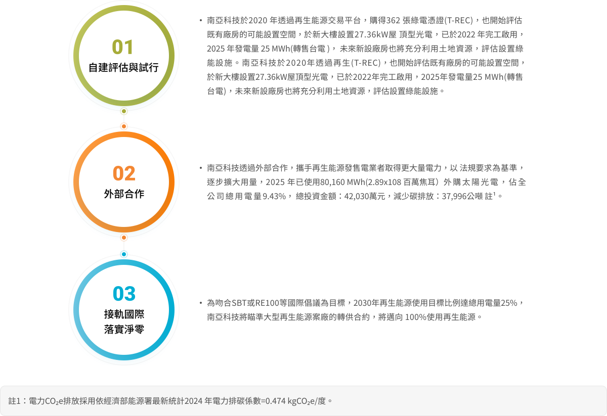
水資源管理
受到全球氣候變遷影響，台灣各地區的降雨變成兩極化，導致水災與缺水的現象同時存在。因此，南亞科做為半導體產業重要成員，長期關注因全球氣候變遷造成水資源短缺風險，深刻了解氣候變遷與水資源對營運之影響，南亞科技為降低對環境造成衝擊及缺水面臨之風險，南亞科持續推動節水措施，更致力於水回收再利用，2023年導入全球唯一可持續水管理標準(Alliance for Water Stewardship Standard，AWS)，依循國際AWS標準，積極落實AWS五大推動成果，持續與系統化來實踐水資源永續管理。
南亞科技於水資源管理上的努力，亦獲得國際環境評鑑指標CDP 的肯定，2022-2023年連續兩年「水安全」(Water Security) 類別評鑑為領導級「A」，同時更於2022年~2024年連續三年榮獲TCSA台灣企業永續獎榮獲“水資源管理領袖獎”殊榮，2024年取得AWS國際可持續水管理標準白金級認證，肯定南亞科技致力於應對氣候變遷與水資源管理，為全球永續目標而努力。
- 獲得 水安全領導級評等
- 連續三年 TCSA水資源管理領袖獎
- 取得 AWS 國際可持續水管理標準「白金級認證」
水資源管理策略方向
南亞科技水資源管理政策與要求涵蓋所有營運、研發、生產等據點；有關用水、節水及用水風險評估等每年均彙整於董事會進行報告與檢討。
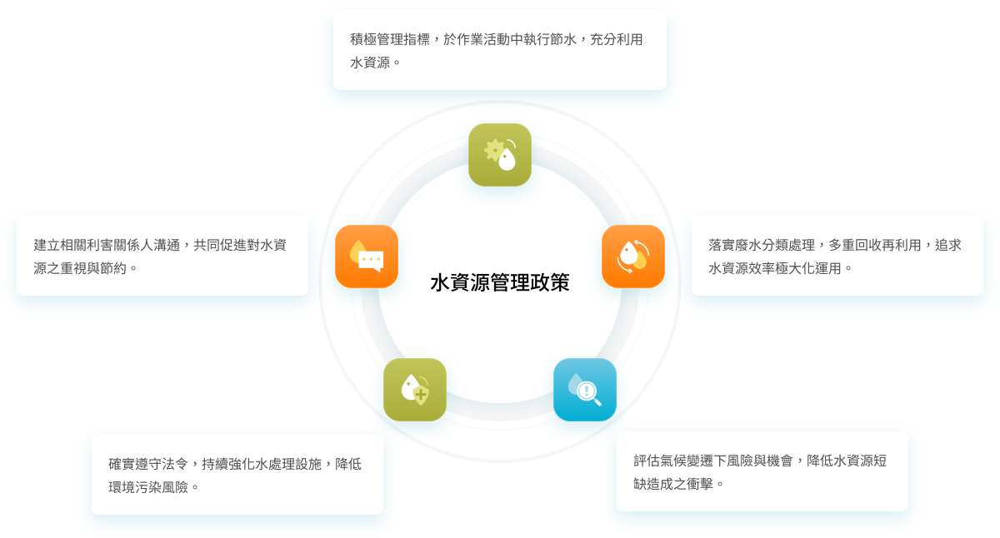
水資源風險管理
南亞科技持續依據國際水安全與水資源管理的要求，強化自身水資源管理系統與提升水回收再利用量能，從強化調適能力方面，本公司已訂有完善的緊急應變計畫，以避免短期缺水或乾旱所造成的立即衝擊，廠區已設置43百萬公升容量的儲水池、一個0.5百萬公升的滯洪池，雨季時可有效回收雨水使用 (FAB 5A建廠期間暫停回收)以及七口水井，雨季時可有效回收雨水使用，且南亞科技已協同鄰近台塑企業各廠區，成立缺水緊急應變組織，組織內可互相緊急調配水源支援。在水回收再利用方面，2024年透過酸鹼廢水、氫氟廢水與有機廢水回收設備之有效處理，總回收水量共5,590百萬公升。藉由調適能力與水回收再利用等機制，南亞科技可以不靠外界供給持續營運21天，歷年來並無因缺水造成生產損失之事件。
南亞科技持續完善標準流程與程序，藉由環境管理架構與公司營運風險管理架構檢視水資源相關風險，推動相關改善措施並制定緊急應變計畫，並於永續推動中心及風險管理推動中心每季會議中定期檢視。未來南亞科技也將持續提升水資源的運用與控管能力，新建廠房也將設置水資源再生中心、蓄水池與備用水源，以因應氣候變遷的不確定性。
原物料減量與廢棄物管理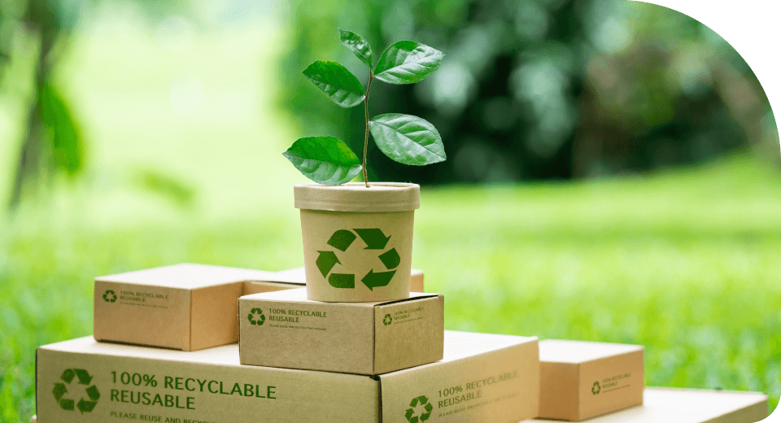
原物料減量
南亞科技針對生產原物料使用量的合理性與適切性定期檢討，並從生產製程的簡化上著手，減少原物料的使用。公司專責組織每年對於原物料的減量定出執行目標，並定期檢討全公司原物料減量的績效。2024年累計完成20項次原料使用量改善提案，其中包含開發新製程配方與降低製程時間等手法來改善製程用量。2024年改善案中，CMP區藉由製程參數優化及減量，有效提升研磨液使用效率，每年可減少用量135.4噸為最大效益。
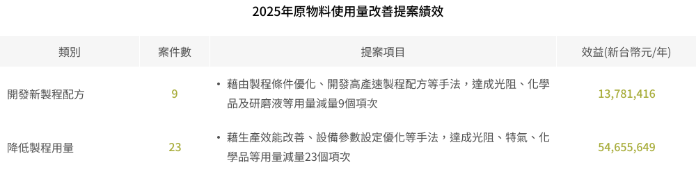
循環再利用
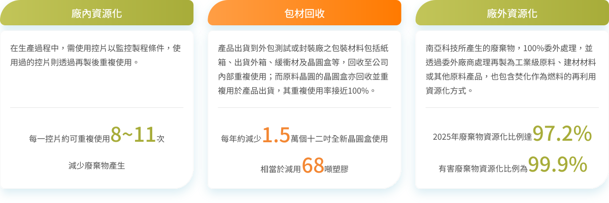
廢棄物減量專案
含銅廢液電解回收銅
南亞科技投入819萬元建置銅廢液電解再生系統，利用樹脂吸附後再生，產出高濃度硫酸銅廢液，將其電解後產出銅箔進行回收，透過「共銅創藝專案」，連結明志科技大學與新北市在地藝術家莊清泰先生，將廢銅箔再製成藝術作品，提升與利害關係人溝通效益，另一方面，將廢銅箔製成工業級原物料再利用，達成資源循環之效益，2024年共產出1,070公斤銅箔。
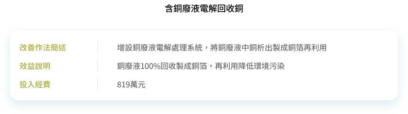
環境污染防治
基於環境保護及環評承諾，針對開發範圍內之空氣品質、噪音振動、地表水及地下水水質、交通流量、動植物生態等環境影響因子進行定期監測，自2014年起並未有任何違反環保法規的紀錄。另與主管機關進行確認，南亞科技開發範圍非屬環境敏感區位及特定目的區位。於環境、安全與衛生政策中，全力推動各項減廢暨資源再利用，以符合法規要求及回應所簽定的與環境保護相關要求事項之承諾。
空氣污染防制
自設廠以來，南亞科技一直相當重視污染防制，除了透過環境管理方案規劃，有效減少原物料使用量，降低廢氣排放濃度之外，並使用符合法規標準之空氣污染防制設備，每項設備皆有定期的保養與巡檢，並且對操作人員授予完整的教育訓練，維持系統的正常操作並確保排放之氣體不危害生活環境。南亞科技主要空氣污染物分為酸、鹼廢氣與有機廢氣，依據廢氣的特性導入適宜的處理流程及設備中；製程端產出後進入局部廢氣處理設備，去除特定物質後，酸或鹼性廢氣分別集中至酸/鹼洗滌塔處理，經處理後呈中性再排放大氣；有機廢氣則經過沸石轉輪吸附後，濃縮再進入後燃燒設備直接破壞，燃燒處理效率高達99%，遠優於法規標準。2024年單位產能所排放之有機空氣污染物 (排放強度)為 12.9g VOCs/kpcs 4Gb eq。
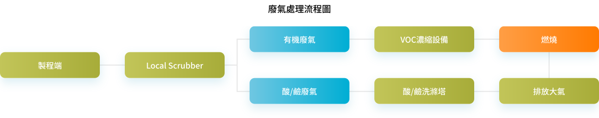
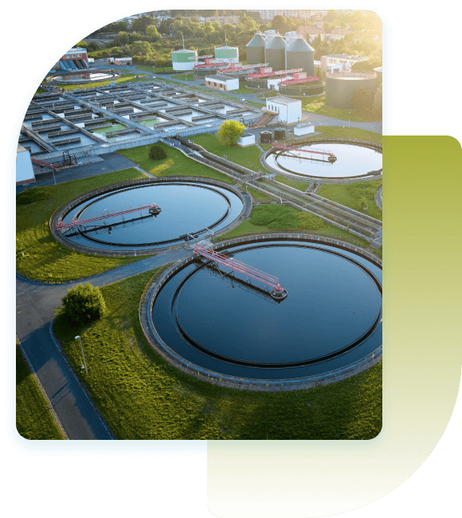
水污染防治
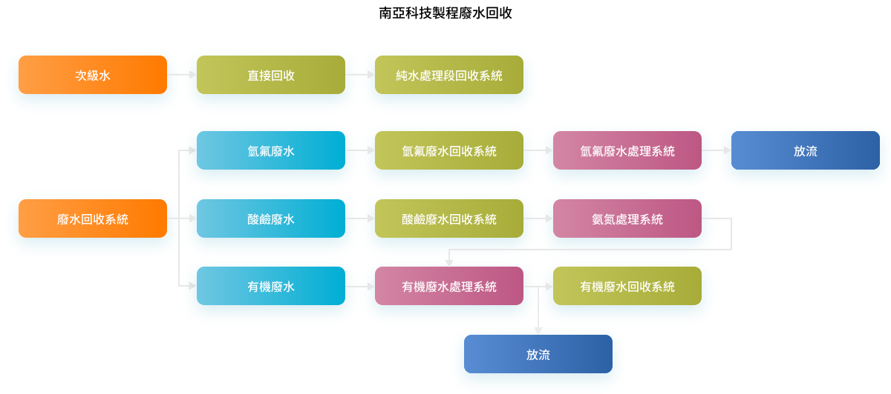
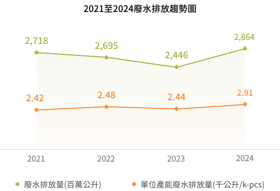